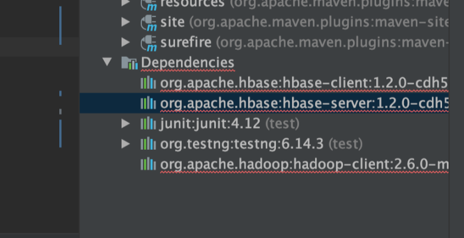
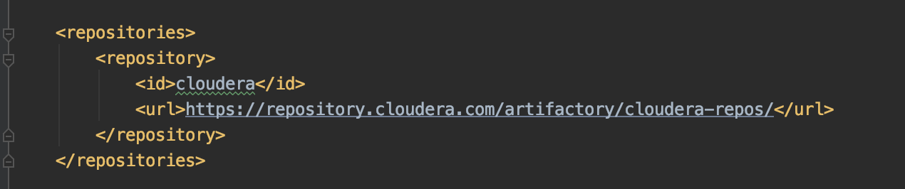
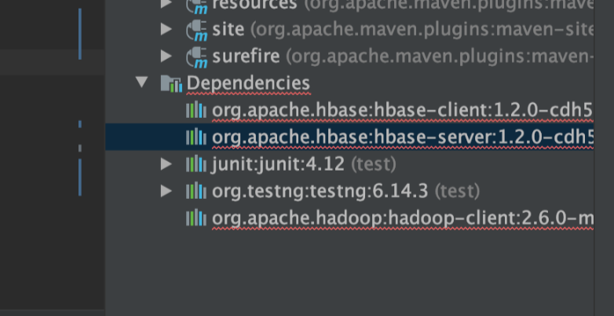
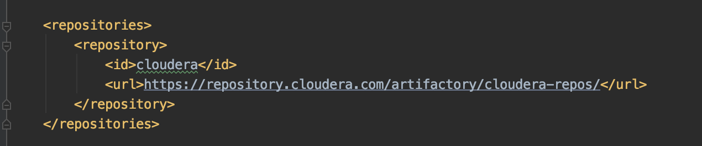

1 Maven无法下载cdh 中jar包的问题
1.1 问题描述
- maven仓库中、pom文件加载如下配置，无法下载jar包,示例如下：
1 | <dependency> |

###1.2 解决方法
1.2.1 maven 配置文件setting.xml
1 | # 在该用aliyun仓库的同时，使用cloudera |
1.2.2 项目pom.xml

1.2.3 刷新maven项目即可

2运行mr程序报错
2.1问题描述
1 | 异常信息 |
2.2 解决方法
1 | // 配置加上目录 |
- maven仓库中、pom文件加载如下配置，无法下载jar包,示例如下：
1 | <dependency> |

###1.2 解决方法
1 | # 在该用aliyun仓库的同时，使用cloudera |

1 | 异常信息 |
1 | // 配置加上目录 |